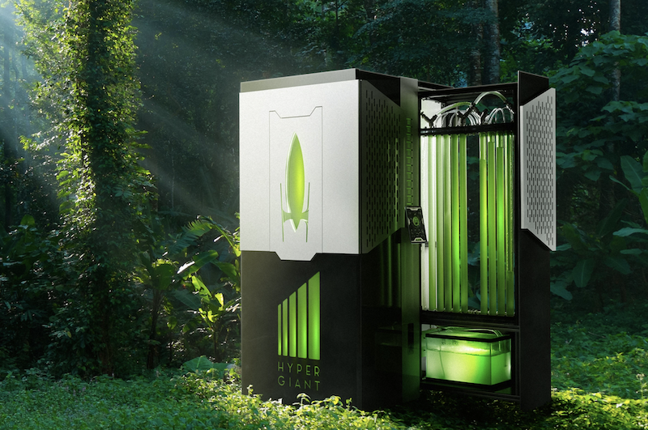

The Tiny CO₂ Killer

The Intergovernmental Panel on Climate Change (IPCC) has published six assessment reports on future climate scenarios with recommended methods and target reduction rates. The most common of these reports focus on methods by which we can reduce the rate of global warming by 1.5 - 2 degrees C per year. Scientists use these levels as a benchmark: 1.5 - 2 degrees C of warming over the next 10 years will cause irreversible changes to the Earth’s climate.
The IPCC has outlined four potential pathways for how the world can avoid the irreversible consequences of 1.5 - 2 degrees C warming over the next decade. According to their research, if we have a chance of staying below 1.5 degrees, it won’t be by simply reducing emissions: we also need to be actively removing CO₂ from the atmosphere. All of the IPCC’s pathways that would lead to a world below 1.5 degrees of warming require both reducing and removing CO₂.
The IPCC recommendations roughly fall under two categories: reduction and removal of CO₂. Methods of reduction you’ve likely heard of: solar panels, windmills, plant-based diets. At a global scale these changes would reduce the amount of energy we use and limit our reliance on fossil fuels.
On the other side are methods of removal: things that actively suck carbon dioxide out of our atmosphere. Carbon removal includes things like planting more trees and other plants that naturally absorb CO₂. A carbon removal plan might also include newer technologies that use bioenergy with carbon capture and storage (usually called BECCS, but more on that later).
This is a story about how we could get there; a story about trees and algae and giant human-sized bioreactors; and ultimately, a story about how maybe our solutions can reflect the natural world around us.
The hope of a trillion trees
At Davos this year, the World Economic Forum announced a plan to plant one trillion trees over the next decade. The campaign received widespread approval and enthusiasm from attendees, and even got a stamp of approval from President Trump in his State of the Union. (This may seem surprising to many coming from the man who notoriously tried to withdraw the US from the Paris Agreement on coordinated climate action.) But as we’ll see, the possibility of even planting a trillion trees may be more of a romantic pipedream than an achievable reality.
More trees in the world does give us some reason to celebrate. According to a study comparing natural climate solutions, the top two methods for cost-effectiveness and amount of CO₂ removed are planting more trees (reforestation) and keeping the trees we have now from being destroyed (avoided forest conversion). The “trillion” target for number of new trees planted is also supported by research: The global tree restoration potential, a study published last year in Science, claimed that planting 1.2 trillion tree saplings on 1.7 billion hectares could remove “two-thirds of all the emissions from human activities that remain in the atmosphere today.” For scale, this would be the equivalent of reforesting an area of land the size of the United States and Canada combined.
Trees, and plants in general, are very good at the removing CO₂ part of our fight against irreversible climate change. Many people categorize this as a viable carbon sequestration method. But there’s a problem with planting a trillion trees: we need the land to do it and we need to keep them alive.
A trillion trees fall short
Shortly after releasing the study claiming that 1.7 billion hectares of new forests could drastically reduce emissions, the authors of the study received series of sharp rebuttals from the scientific community. Critics claim that the study drastically overestimated the amount of carbon sequestered by trees; alternative models suggest it’s closer to half of what was projected.
But model estimates aside, the trillion tree plan has a few other significant drawbacks: time and scale. Let’s look at time first.
Travel booking app Hopper announced earlier this year that for every flight booked through their app, they will donate money to plant four trees. Their back-of-the-envelope math estimates that one tree will sequester around a metric ton of carbon dioxide, which would offset a return trip from a single passenger in the air on a cross country flight. But there’s a problem: trees don’t spring into the earth fully grown, sucking their max amount of carbon out of the atmosphere.
Best case estimates show that it will take around 25 years before the amount of carbon sequestered matches the amount of carbon emissions for a single person’s share on a single flight (some trees can take up to 100 years to mature fully). So while the strategy may be effective, it won’t help us much in the ~10 years estimated by the IPCC that we have left to prevent irreversible changes to the climate. A team of scientists at NASA estimate that reforesting 1.7 billion hectares of new trees between one and two thousand years.
The second obstacle is scale. Researchers claim that the available land we have across the world to plant more trees equals about the size of the entire United States (the study from Nature would require land the size of the US plus Canada). But this planting goal also assumes the best case scenario in which humans 1) willingly convert existing land to forests and 2) protect forests with a renewed vigor.
To take a specific example, let’s look at a single country. The United Kingdom has pledged to reach net zero emissions by 2050. A report this year found that in order to reach that goal, the UK would need to commit 20% of its current farmland to dedicated carbon capture and storage uses. And to have a chance at reaching their targets, they need to start doing that, more or less, right now.
Converting farmland is not an isolated effort either: Reducing traditional crops by around 20% means the government will also count on people to adopt low-carbon farming practices, reduce food waste, and make diet changes described as “a 20% shift away from beef, lamb and dairy to alternative protein sources”.
If you apply this concept across the world, the amount of farmland we need to convert is daunting. According to the IPCC report, over 70% of Earth’s ice-free land is being used or shaped by human activity. Around 25-30% of this usable land is going straight to producing food, raising cattle, growing cotton for clothes, and energy production.
On top of all this, if somehow we did find the 1.7bn hectares of suitable land to plant these trees, we would also need to protect them. When trees die, they release all the CO₂ they have eaten up back to the atmosphere. Deforestation in the Amazon rainforest rose by nearly 30% in 2019. On the other side of the globe, bushfires in Australia emittednearly half of the country’s annual emissions — and that’s on top of Australia’s usual CO₂ output.
To fully understand the complications around relying on trees to save the planet, it’s useful to look at how this actually plays out with a simulation.
Each
green dot represents a unit of CO₂. Some studies estimate that a single tree can remove up to 48 lbs CO₂ per year. When a tree sequesters CO₂, it stores it as a blue dot. But sometimes trees are felled, burned, or just die naturally...When a tree does die, it releases all the CO₂ it removed back into the atmosphere. The menu bar on the left keeps track of these “deforestation” events. It also tracks how many years we have left to make meaningful changes (as noted earlier, it’s somewhere between 10-30 years depending on who you ask).
Run the simulation for yourself below to see how the cycle of tree planting affects CO₂ levels!
Can you remove all the CO₂ with trees?
Plant a forest to see how many trees it would take to remove all the CO₂ bubbles. But be careful: when you lose a tree, you also lose the CO₂!
Let’s plant a forest of 5.00 young trees
Trees in forest: 5
Years elapsed: 0
Deforestation events: 0
Planting trees is unquestionably a good idea, but it’s likely not the “silver bullet” solution to fighting climate change. We also need to be pursuing new technologies and methods of capturing carbon from the atmosphere like direct carbon capture from the air. And maybe, we might find inspiration for tackling one of humanity’s biggest technical challenges in one of Earth’s smallest life forms: algae.
How algae removes CO₂ from the atmosphere
You’ve probably seen algae before---it’s floating about on ponds and washing up on shores as kelp seaweed. It takes many different forms, though. Algae can be as small as 0.2mm in picoplankton and as large as 60m long in the form of giant sea kelp. And incredibly, when you take all the types of algae together, this family of flora produces about half of all oxygen on the planet.
In recent years, there has been a growing interest in how we can use algae like we use trees to suck carbon dioxide out of our atmosphere. Except with algae, there are different possibilities: due to its size and composition, algae excels at a special type of carbon removal method called bioenergy with carbon capture and storage (BECCS). This means that researchers are studying two things: 1) how we can use algae to remove carbon and 2) how we can use the captured carbon for something else, such as fuel, food, and heat.
Some researchers have criticized BECCS as being too premature for industrial scale solutions since these types of solutions have often not been demonstrated at a commercial scale. Regardless of being a less developed research solution, scientists agree that in the long term BECCS is no longer an optional piece to solving the climate crisis. In the latest IPCC assessment report published in 2014, 101 of the 116 scenarios that achieved a “likely” chance of staying below 2C relied on BECCS. And 67% of these scenarios said BECCS would represent at least 20% of the world’s primary energy by 2100.
Algae presents one of the most promising BECCS candidates to date.
Here are a few reasons why we’re so interested in algae as a possible climate change solution:
- Usually, it’s small. Algae uses far less land than trees, which is great because as we’ve already seen, land is in short supply. It tends to produce an equal amount of bioenergy to terrestrial plants using only 1/10th of the land area. While most algae is small, but giant sea kelp can grow up to 100ft.
- It’s easy to grow. Growing microalgae consumes less water than many land crops and they also are not picky about where they grow. Algae has been shown to thrive in areas where other plants die, such as wastewater and saltwater.
- It thrives in very high CO₂ environments. One acre of algae should be able to remove about 2.7 tons/day of CO₂. Certain species of microalgae have also been shown to efficiently remove CO₂ in environments at a rate of 10-50 times higher than terrestrial plants.
- It has many applications. Algae can be converted into fuel, food, energy and more, all within a much smaller space. One study showed that compared to a crop like soybeans, a single hectare of algae ponds generates 27 times as much protein.
Uses of algae
Algae can be used for a plethora of different things after it has captured carbon. When discussing methods of carbon capture, some scientists advocate for burying the resulting carbon away in hopes that it doesn’t return to the atmosphere. But with algae, instead of sinking it to the bottom of an ocean, for example, scientists are finding all sorts of ways to use the bioenergy from algae in creative and sustainable ways.

plastic
carbon fiber
animal feed
t-shirts
shoes
snacks
Algae has a number of byproducts that can be used as biofuels for transportation, building materials, feed for animals and humans, and clothing. This is the crucial part of a BECCS technology: once you capture the CO₂, you need to figure out what to do with it. Otherwise, the CO₂ will find its way back into the atmosphere, just like when a tree dies at the end of its life (or more tragically, is burned).
Researchers at Technical University of Munich are currently converting algae into carbon fiber which can be used for buildings and construction. Dutch designers Eric Klarenbeek and Maartje Dros are using algae to create plastics using 3d printing.
Commercial companies such as Pond Technologies are creating new products based on algae such as animal feed, ingredients for cosmetics, and even seaweed snacks. There is even a building in Germany that uses an algae-laced skin around it to power the electricity for the facility. And as research continues, more methods of adapting algae proteins for sustainable usage are sure to emerge.

Methods and complications of using algae for carbon capture
So how can scientists use algae to pull CO₂ from the air? Well, much like any other plant, algae uses photosynthesis to take in CO₂, water and sunlight in order to produce energy. But unlike many plants, most of this energy is devoted to cell division, meaning it is constantly self-replicating into more algae. Since algae does not need to make energy for stems or roots like land plants, it can replicate much faster. This makes it incredibly easy to grow, but also challenging to maintain.
Sinking it in the ocean
One method of growing algae at scale is to use our open oceans. Research has shown that by adding iron to the ocean, algae will grow in an algae bloom and start to remove CO₂ from the atmosphere. When this algae begins to die, it sinks towards the ocean floor along with the carbon it just sequestered. Once sunk, scientists estimate it could stay there for centuries.
Critics of this method cite the unintended environmental side effects as too dangerous. The ecological impact of fertilizing the oceans at large are still relatively unknown (for example, the possibility of the CO₂ leaking in the future). Other studies have shown how unrestricted algal blooms can turn toxic, killing ecosystems and valuable marine life.
Some people think the pros of removing CO₂ outweigh the cons. Prof Victor Smetacek at the Alfred Wegener Institute for Polar and Marine Research in Germany, who led a research study on using algae to sink CO₂ to the bottom of the ocean, said, “The time has come to differentiate: some geoengineering techniques are more dangerous than others. Doing nothing is probably the worst option.”
Grow it in a pond
There are also options to grow algae for carbon sequestration in controlled environments. A research experiment published in the American Institute of Biological Sciences tested growing algae in a controlled pond environment. The researchers strategically placed this pond next to a fossil-fuel power plant to test its maximum carbon capture potential and then compared these results with direct air capture (DAC) and Bioenergy Carbon Capture and Storage (BECCS) using soy.
They found that in addition to the algae absorbing CO₂, the injection of flue gas from the power plant actually accelerated algae growth, increasing biomass productivity by up to 30%. The downsides of growing algae near power plants come down to the cost of adopting: despite promising experiments, most energy companies do not consider it worth the investment due to a lack of economic incentives to adopt emerging technologies. Once implemented however, the study showed that compared to DAC and BECCS with soy, algae-based BECCS proved 36% and 67% more cost effective respectively.
Cultivate in a bioreactor
Perhaps the most advanced method of using algae for BECCS is to grow it within a bioreactor. In 2019, artificial intelligence company Hypergiant Industries released designs for an algae-fueled bioreactor prototype. They claim that by growing a particularly effective strain of algae called chlorella vulgaris inside the bioreactor, the device can soak up to 400x more CO₂ than typical trees.
The magic of bioreactors lies in the ability to hyper-regulate an environment. The bioreactor is constantly taking measurements of the algae’s growth environment, and then using machine learning algorithms to find the perfect balance of light, temperature, and pH levels that algae will flourish under.
Think big by thinking small
Here are a couple things that we know: the Earth is getting hotter, and human activity has caused this transition. There are many methods by which we could slow or reduce this warming through natural solutions. And time is absolutely of the essence---a study in Nature estimates that the past decade has shrunk our time window to minimize the effects of climate change. Instead of 30 years, we now have closer to ten.
Despite all the benefits of algae listed above, it’s time to accept the uncomfortable truth of our time: there is no single solution to climate change. Not a carbon tax, not trees, and not even algae. Given the urgency of our global predicament, we need a coordinated suite of multiple solutions to solve this problem. We need holistic climate solutions, ones that take out the bad stuff (CO₂) while also creating new value---like replacing oil-based plastics with algae-based polymers.
This is the power, and the potential promise, of algae. Rather than the single benefit of reducing CO₂, it is the combination of benefits that matters most: it’s small, it can grow wherever there is water, and it contains proteins that can be repurposed into a myriad of different products. But this isn’t to say algae alone can save the world; our strategies to counter climate change need to be as diverse and multi-faceted as algae can be. Our ecosystems are deeply interconnected and multifaceted; why shouldn’t our climate change strategies look the same way?